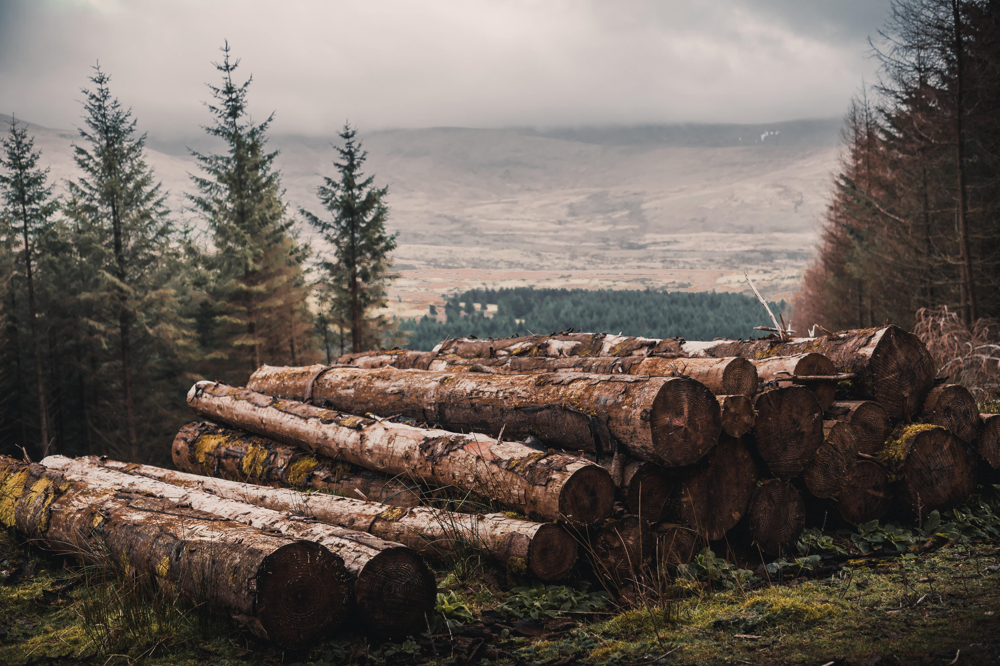
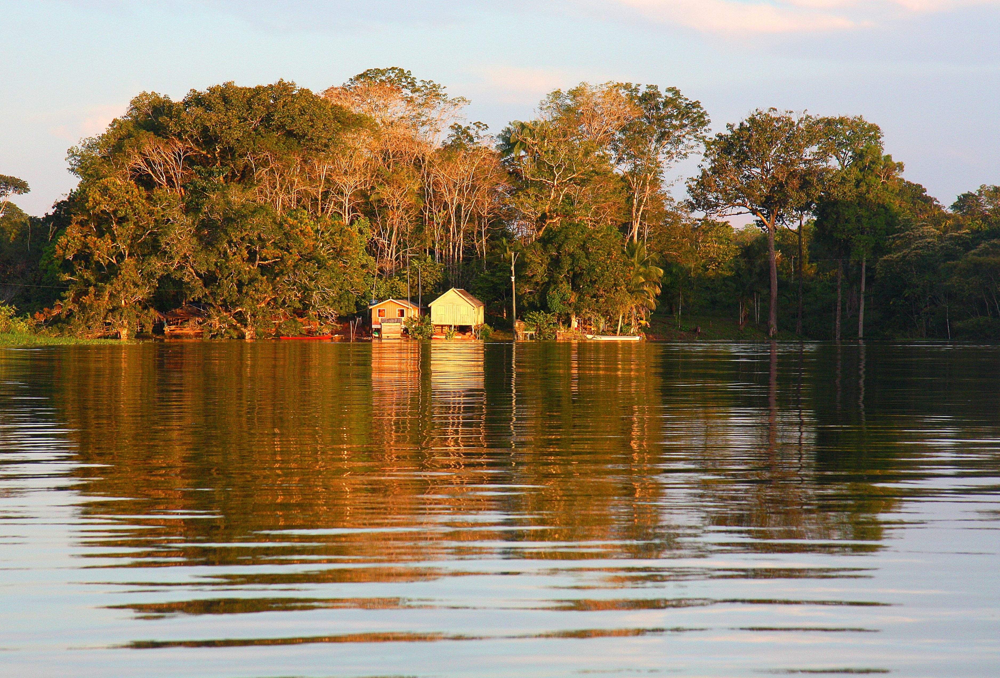

As melhores madeiras do mundo
O Jacarandá é uma madeira de lei muito utilizada na criação de móveis de luxo como cadeiras, bancos, mesas, armários, etc.
A palavra “ipê” significa casca dura em tupi. Isso mostra como os índios brasileiros já conheciam a resistência dessa madeira de lei.

Desmatamento na amazônia
O desmatamento da Amazônia não é uma prática atual. O bioma, que ocupa cerca de 49,29% (4.196.943 milhões de km2) do território brasileiro nos estados do Acre, Amapá, Amazonas, Pará, Roraima, Rondônia, Mato Grosso, Maranhão e Tocantins, mantinha-se preservado até a década de 1970 passou a sofrer com a retirada da cobertura vegetal a partir desse período.